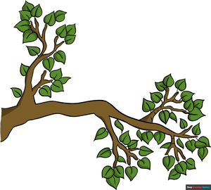

ⲙⲟⲩⲗϭ S, ⲙⲟⲩⲗϫ B nn m, branch: Ps 79 12 B (S ϯ ⲟⲩⲱ) παραφυάς; K 261 S ⲡⲓⲙ. غصن, فرغ; Sh(?)Mor 54 69 S true vine ⲛⲧⲱⲧⲛⲛⲉ ⲛⲉⲙ. (cf Jo 15 5).

ⲙⲟⲩⲗϭ S, ⲙⲟⲩⲗϫ B nn m, branch: Ps 79 12 B (S ϯ ⲟⲩⲱ) παραφυάς; K 261 S ⲡⲓⲙ. غصن, فرغ; Sh(?)Mor 54 69 S true vine ⲛⲧⲱⲧⲛⲛⲉ ⲛⲉⲙ. (cf Jo 15 5).
| view | ⲧⲁⲣ SB ⲧⲁⲗ Sf ⲧⲉⲣ L ⲧⲉⲗ F | (noun masculine) (f once), branch, point [σφαιρωτηρ, κλαδος, κλημα]1618 |
| view | ϫⲁⲗ B | (noun masculine) branch [κλαδος, κλημα]
hayfork2389 |
| view | plural: ϩⲁⲣⲁϫ, ϩⲁϫⲁⲣ B | (noun) branches2276 |
| view | ⲗⲁϧⲉⲙ B | (noun masculine) trunk, branch, stalk, tube [καρφος, πυθμην, στελεχος, καυλος, κλαδος]2942 |
| view | ⲙⲟⲩⲗϫ, ⲙⲟⲗϫ, ⲙⲟⲗϫ⸗, ⲙⲟⲗϫ† B | (verb) intr: enwrap, embrace [περιπλεκειν]
as nn m, embrace1061 |
| view | ⲙⲟⲩⲗⲁϫ B | (noun masculine) night raven [νυκτικοραξ]1060 |